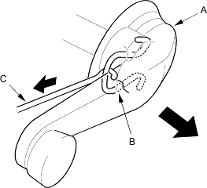
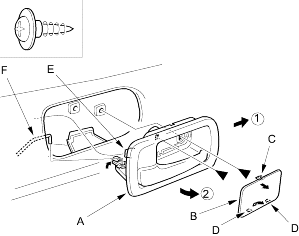
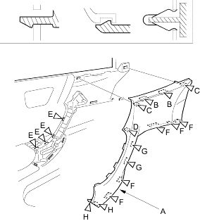

Special Tools Required
Trim pad remover, Snap-On A 177 or equivalent, commercially available.
- Remove the mirror mount cover, refer to the '01 Civic Shop Manual, P/N 62S5A00 on this CD (see step 2 on page 20-170).
- Remove the regulator handle (A) by pulling the clip (B) out with a wire hook (C).

- Remove the inner handle (A). Take care not to scratch the door panel.
- Pry out on the upper portion of the cover (B) to release the hooks (C and D), then remove the cover.
- Remove the screws.
- Pull out the inner handle forward and out half-way to release the hook (E).
- Disconnect the inner handle rod (F).
Fastener Locations
 : Screw, 2
: Screw, 2

- Remove the grip cover (A).
- Pull out along the top to release the upper hooks (B) and the upper clip (C).
- Pry out along the top of the grip portion to release the hook (D) and tabs (E).
- Pry out the bottom and rear edge of the cover to release the hooks (F), tabs (G) and rear hooks.
Fastener Locations
B, D, F, I  : Hook, 10E, G, H : Tab, 6C : Clip, 2
: Hook, 10E, G, H : Tab, 6C : Clip, 2
